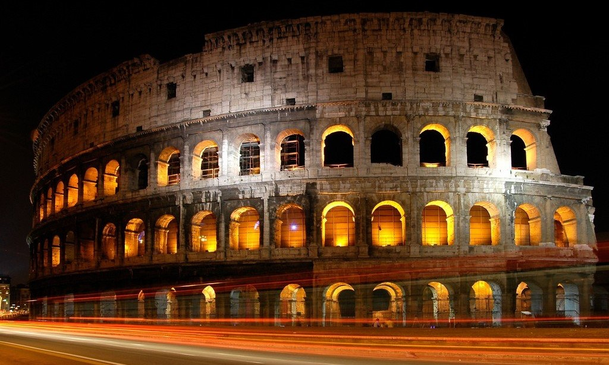
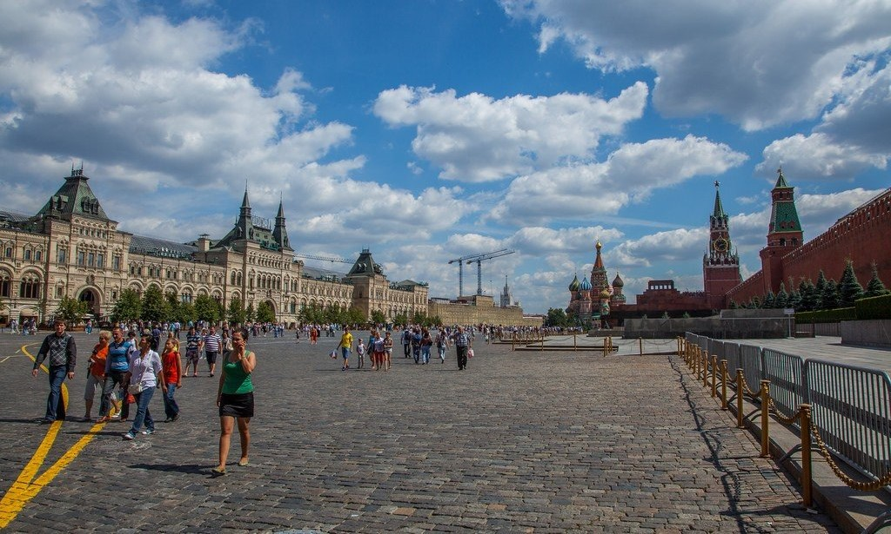
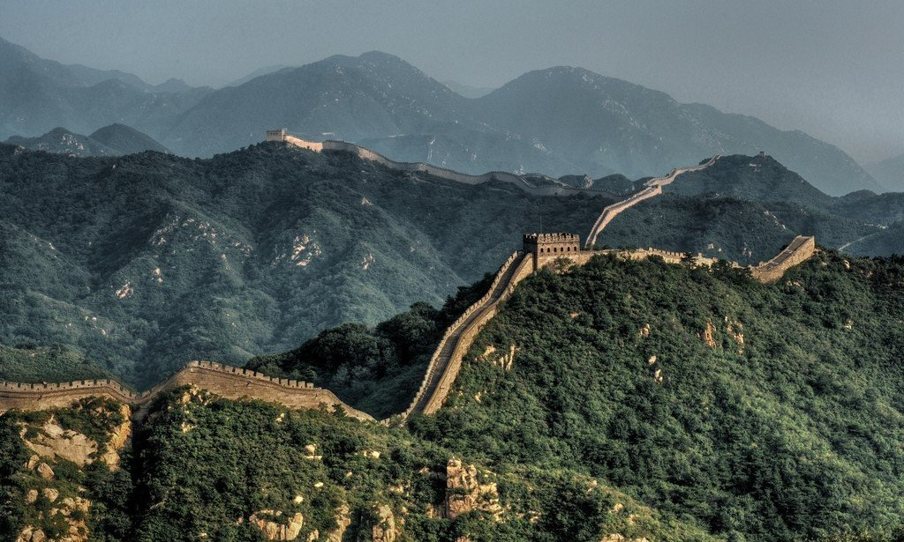

Колизей
История Колизея восходит к 68 году, когда измена преторианской гвардии и осуждение Сената заставили читать далее...

Красная площадь
Главная площадь Москвы, расположена между Московским Кремлём (к западу) и Китай-городом (на восток). Выходит к читать далее...

Китайская стена
Строительство первых участков стены началось в III веке до н. э. в период Воюющих царств (475-221 гг. до н. э.) для читать далее...